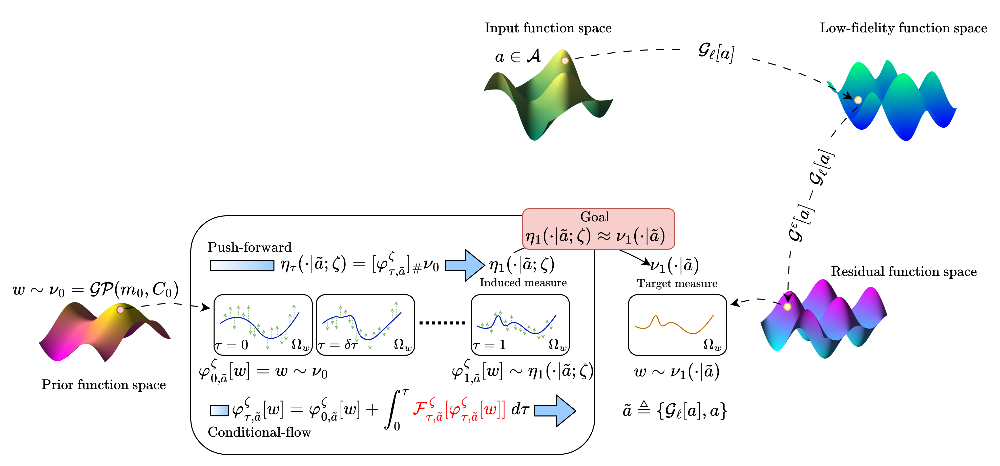
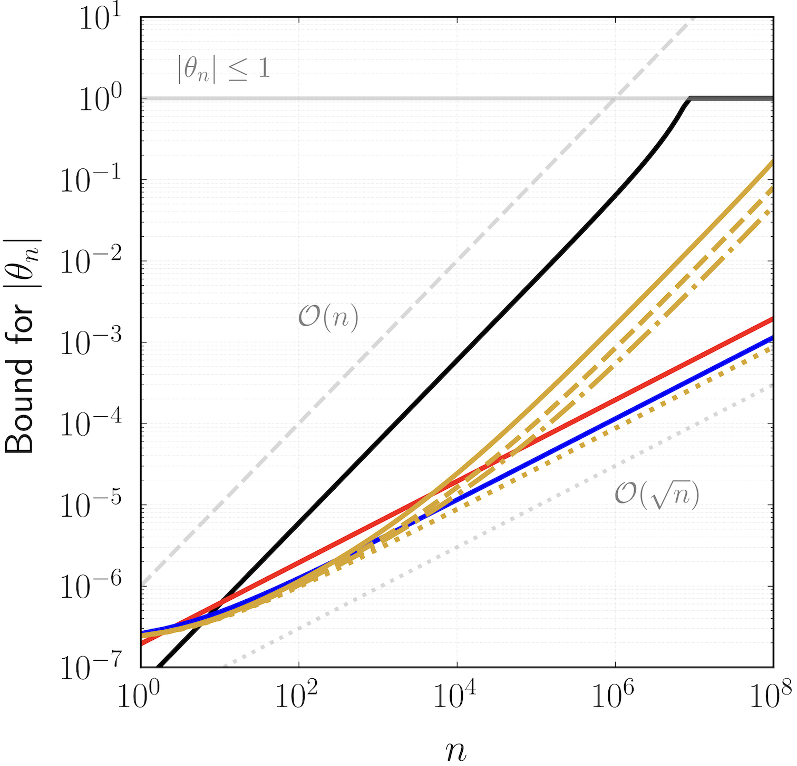

2026
Defended my Ph.D. dissertation: Reliable Predictive Modeling Under Data, Fidelity, and Hardware Limitations.
I am a doctoral researcher in the Computational Aerosciences Lab at Michigan, advised by Prof. Karthik Duraisamy. My work focuses on probabilistic scientific machine learning, including flow-matching neural operators for multi-fidelity PDE learning and information-theoretic methods for uncertainty-aware inference.
Previously, I worked with Prof. Eric Johnsen on cavitation and wall-impact modeling, and I interned at Argonne National Laboratory with Prof. Romit Maulik on multi-fidelity reinforcement learning for shape optimization.

A resolution-invariant flow-matching neural operator for probabilistic PDE surrogates that learns low-to-high fidelity residual structure with calibrated uncertainty.
